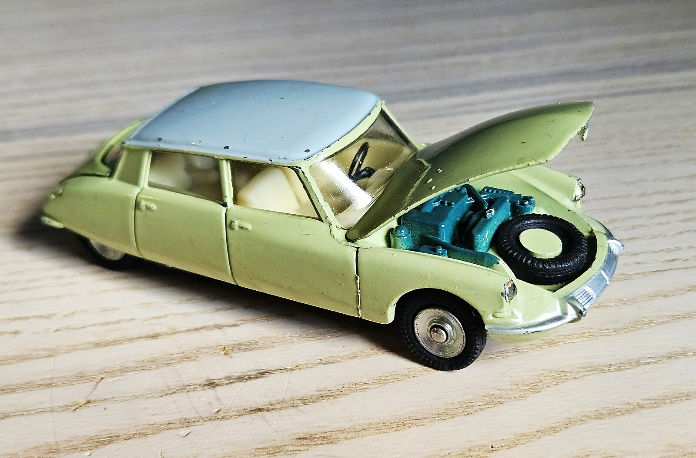

Pièce maîtresse
Lot 01
Citroën DS19
« La Déesse » — la version la plus aboutie de la lignée Dinky.
- Fabricant
- Dinky Toys France · réf. 530
- Datation
- 1963/64–1970 · échelle 1/43
- Estimation
- 70–150 €
Dévoilée au Salon de Paris 1955, la DS est un choc — hydraulique, ligne soucoupe, génie français. Le 530 est le dernier et le plus raffiné des DS Dinky France : capot avant ouvrant sur un moteur reproduit, roue de secours, coffre ouvrant. Sous le châssis : « MECCANO · DINKY TOYS · CITROËN DS19 · FRANCE · 1/43 ».
La pièce la plus précieuse du lot. Le capot ouvrant la distingue des 522/24CP (fermés) et signe le 530. La teinte vert tilleul / toit gris est l'une des plus prisées en FR/BE ; un châssis argent cote ~25 % de plus qu'un noir. À écarter : les rééditions Atlas modernes (certificat + brochure récents).
Sources : Filrouge (cote FR) · DTCA (historique 24C→530) · ToyMart 530